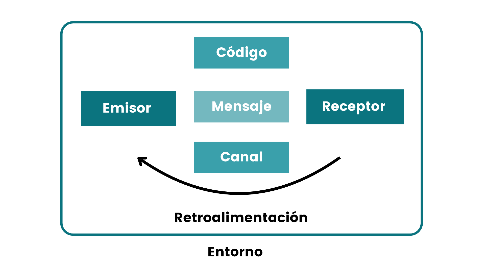

Una manera de entender cómo se comunica la gente es examinar los pasos que se dan en la transmisión y recepción de un mensaje.
|
Para que tenga lugar una comunicación eficaz, debe haber seis componentes: Un emisor, un mensaje, un canal, un receptor, retroalimentación y un entorno. Además, un séptimo componente, el ruido, que afecta todo el proceso de comunicación. |
 |